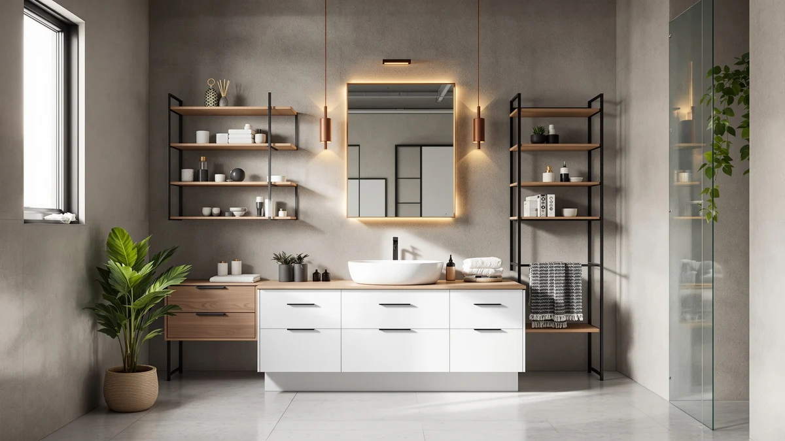

Best Small Bathroom Vanity with Storage (2026)
Prices and picks verified as of September 2026. Independent, reader-supported reviews.


Quick Answer
The best small bathroom vanity with storage usually comes from pairing a compact vanity with the right organizer or cabinet, not from finding a bigger vanity. The Vtopmart 4 Pack Small Clear bins are the easiest way to add that extra storage, turning a shallow drawer or shelf into organized, visible space for $25.99. If you need more than drawer space, the Homhedy Small Bathroom Storage Cabinet adds a full freestanding tower for $54.99.
Our pick: Vtopmart 4 Pack Small Clear — $25.99 Check Price on Amazon
Bottom line: our top pick is the Vtopmart 4 Pack Small Clear Stackable Storage Drawers at $25.99. The best budget option is the Vtopmart 4 Pack Bathroom Organizer at $35.99.
Things to Know Before You Buy
- A small vanity rarely holds enough on its own. Pairing it with a compact organizer or a slim floor cabinet does more for storage than searching for the best small bathroom vanity with storage built in.
- Measure the gap before you buy. A cabinet that looks compact in photos can still be too deep for a cramped layout, so check clearance around the door swing and any nearby fixtures first.
- Clear bins beat opaque ones inside a small vanity. You can see what is inside without pulling every container out, which matters when drawer space is already tight.
- Over-the-toilet cabinets add storage without touching floor space. They are worth considering once a vanity and any nearby floor cabinets are already full.
- Metal and wood frames hold up better than all-plastic units. Every cabinet in this guide uses one or the other for the parts that carry weight.
Finding the best small bathroom vanity with storage usually means looking past the vanity itself, since most compact vanities offer one shallow drawer and a cabinet barely big enough for cleaning supplies. We compared seven storage cabinets and organizers built to close that gap, from clear stacking bins that fit inside a vanity drawer to freestanding cabinets that stand next to it. Our pick for most people is the Vtopmart 4 Pack Small Clear set, a $25.99 bin system that turns a shallow vanity shelf into organized, visible storage.
Small bathrooms rarely fail because of the vanity design. They fail because everything else, extra towels, cleaning bottles, and backup toiletries, has nowhere to go once the vanity is full. A narrow floor cabinet like the Homhedy Small Bathroom Storage Cabinet or the BEWISHOME Bathroom Storage Cabinet Small can stand in a gap as tight as 7.9 inches deep and still add a full column of enclosed storage. For a bathroom where even that gap does not exist, an over-the-toilet unit like the Shintenchi reclaims wall space you are not using at all.
We researched pricing, dimensions, and verified owner reviews for every product in this guide instead of relying on marketing copy, and we priced these solutions from $25.99 up to $79.99 so this works whether you are outfitting a rental or renovating for the long term. Below, you will find how we picked and compared these products, a detailed look at each one, and an honest account of where each falls short.
Why You Should Trust Us
I am Ilane Tall, and I research bathroom storage products for Best Bathroom Storage. For this guide, I focused specifically on solutions for small bathrooms, the kind with a compact vanity, a single narrow doorway, and almost no floor space to spare. No manufacturer pays for placement here, and the affiliate links in this article do not influence which products make the list.
My approach to finding the best small bathroom vanity with storage starts with the reader's actual problem: not enough room, a limited budget, and a vanity that cannot hold everything. I cross-check pricing, dimensions, and verified buyer feedback for every product before it earns a spot, and I flag the tradeoffs plainly instead of glossing over them.
How We Picked
We started with a broad list of storage cabinets, organizers, and bins marketed for small bathrooms, then narrowed it down using criteria that matter when you are trying to find the best small bathroom vanity with storage on a tight floor plan. A product had to fit a small footprint, use a sturdy metal or wood frame for anything load-bearing, and cost less than a full vanity replacement.
We also prioritized variety in how each product adds storage. Clear bins and organizers work inside an existing vanity, narrow floor cabinets stand beside it, and over-the-toilet units use wall space a vanity cannot reach. That mix means this guide works whether you need to organize what you already have or add an entirely new storage piece.
How We Compared
We compared each product in this guide using verified pricing, dimensions, and material specs pulled directly from the listings, along with owner reviews to check for recurring complaints about assembly, sturdiness, or misleading sizing. For the storage bins and organizers, we compared capacity and stackability against the shallow drawer space a typical small vanity offers.
For the freestanding cabinets and the over-the-toilet unit, we compared floor and wall footprint against the storage each one adds, since a cabinet that eats more space than it frees up defeats the purpose in a small bathroom. Reviewers consistently note assembly time and stability as the biggest differentiators among similarly priced cabinets, so we weighted those factors heavily when ranking the picks below.
Our Picks

Vtopmart 4 Pack Small Clear
What we like
- Clear sides make it easy to spot what is inside without opening every bin
- 4-pack at $25.99 covers an entire vanity shelf or drawer
- Compact 7.5 x 6 x 4.4-inch size fits shallow cabinets other bins cannot
Flaws but not dealbreakers
- Only one size in the pack, so it will not suit taller items like spray bottles
- Open-top design means loose items can shift if the drawer gets bumped
| Material | Metal / wood |
| Size | 7.5"D x 6"W x 4.4"H |
The Vtopmart 4 Pack Small Clear bins are the pick we would point most small bathrooms toward first, because they solve the actual problem behind a lot of vanity clutter: not enough visible, dividable space. At $25.99 for four bins, this is less about adding a new piece of furniture and more about making the vanity you already own work harder. Each bin measures 7.5 by 6 by 4.4 inches, small enough to fit inside a standard vanity drawer or line up on a narrow shelf without stealing the depth a door needs to close.
The clear plastic construction is the detail that matters most here. Instead of guessing which drawer has your extra toothpaste or hair ties, you can see straight through the sides. Owners report using them to separate makeup, medications, and grooming supplies that would otherwise pile up loose. The tradeoff is that these are organizers, not enclosed storage: there is no lid, so a bin that gets knocked over inside a drawer can spill its contents. For a small bathroom vanity with storage that is more organized than expanded, though, this is the simplest and cheapest fix in this guide.

Vtopmart 4 Pack Bathroom Organizer
What we like
- Uniform S-Standard sizing keeps every drawer looking consistent
- 4-pack at $35.99 organizes multiple drawers in one purchase
- Matches the shelf layout of the Vtopmart Small Clear bins, so the two sets stack together
Flaws but not dealbreakers
- Costs $10 more than the smaller Vtopmart set for a similar function
- Standard sizing may leave gaps in oddly shaped drawers
| Material | Metal / wood |
| Size | S-Standard (4 Pack) |
The Vtopmart 4 Pack Bathroom Organizer builds on the same idea as the brand's Small Clear bins, but in a standardized size meant to organize more than one drawer at once. At $35.99, it costs about $10 more than the smaller set, and that premium buys consistency: every bin is the same S-Standard size, so a full vanity of matching organizers looks less like a pile of mismatched containers and more like an actual system.
This set works best for anyone who has already decided to fully organize a small vanity rather than fix one messy drawer. Buyers who leave reviews often run the full 4-pack across two or three drawers, separating skincare, haircare, and first-aid items into distinct zones. The uniform sizing is also the main limitation: drawers with an unusual shape or a built-in divider may not use every bin's full footprint efficiently. For a standard small vanity, though, this is a straightforward way to add real organization without buying new furniture.

Homhedy Farmhouse Bathroom Storage Cabinet
What we like
- 31.5-inch height adds a full column of enclosed storage without a large footprint
- 23.6-inch width holds towels, tissue, and cleaning supplies a vanity cannot
- Farmhouse styling works as a standalone piece next to a small vanity
Flaws but not dealbreakers
- At $79.99, it is the most expensive option in this guide
- 11.8-inch depth needs a clear wall run, so it will not fit every layout
| Material | Metal / wood |
| Size | 11.8"D x 23.6"W x 31.5"H |
Once a small vanity is full, the next move is not a bigger vanity, it is a second piece of furniture built specifically for storage. The Homhedy Farmhouse Bathroom Storage Cabinet is that piece. At 11.8 inches deep, 23.6 inches wide, and 31.5 inches tall, it is sized to stand beside a compact vanity rather than compete with it for floor space, while still offering enough enclosed volume for towels, tissue, and the cleaning supplies that tend to pile up on top of the toilet tank instead.
At $79.99, this is the priciest pick in the guide, and that price reflects a full cabinet rather than a set of bins. Owners use it to hold whatever the vanity can't: spare linens, first-aid supplies, the odds and ends that don't fit anywhere else, while the farmhouse-style front keeps it from looking like a plain storage box. The main limitation is footprint: an 11.8-inch depth needs a clear run of wall, so a bathroom without that space should look at the narrower Homhedy or BEWISHOME cabinets instead.

Homhedy Farmhouse Bathroom Storage Cabinet
What we like
- Identical 23.6 x 31.5 x 11.8-inch capacity to the other Homhedy Farmhouse cabinet
- Alternate finish suits a different bathroom color scheme
- Same enclosed, freestanding storage a small vanity cannot provide alone
Flaws but not dealbreakers
- Priced the same as the other finish at $79.99, so pick based on style, not value
- Shares the same depth requirement, so measure before buying
| Material | Metal / wood |
| Size | 11.8"D x 23.6"W x 31.5"H |
This is the same Homhedy Farmhouse Bathroom Storage Cabinet covered above, offered in a different finish for bathrooms with a different color palette or hardware. The dimensions are identical: 11.8 inches deep, 23.6 inches wide, and 31.5 inches tall, so the storage capacity and the space it needs are exactly the same. At $79.99, the price matches the other version too, which makes this purely a style decision rather than a budget one.
If the farmhouse look fits your bathroom but the other finish does not match your fixtures or flooring, this variant solves that without any tradeoff in capacity. Reviewers describe using it the same way as the other version, as a standalone storage piece for towels, toiletries, and overflow items that a small vanity cannot hold. Because the footprint and depth match its sibling cabinet, the same layout limitations apply: it needs a clear 11.8-inch-deep wall run to sit flush.

Homhedy Small Bathroom Storage Cabinet
What we like
- 7.9-inch depth fits gaps too narrow for the Farmhouse cabinet
- 31-inch height adds vertical storage in a small footprint
- At $54.99, it costs $25 less than the wider Farmhouse cabinet
Flaws but not dealbreakers
- 14.6-inch width holds less than the larger Homhedy cabinet
- Narrow shelves may not fit bulkier items like large tissue boxes
| Material | Metal / wood |
| Size | 7.9"D x 14.6"W x 31"H |
Not every small bathroom has room for a 23.6-inch-wide cabinet, which is where the Homhedy Small Bathroom Storage Cabinet fits in. At 7.9 inches deep and 14.6 inches wide, it is built for the narrow strip of floor next to a vanity or toilet that would otherwise go unused. The 31-inch height keeps the storage vertical rather than wide, so it adds real capacity without eating into walking space.
At $54.99, it sits in the middle of this guide's price range, cheaper than the full-size Farmhouse cabinet but pricier than the drawer organizers. People use it for rolled towels, tissue, and toiletry backstock in bathrooms too tight for a wider cabinet. The narrower shelves are the honest tradeoff: bulkier items like large tissue boxes or stacked bins may not fit as cleanly as they would in the wider Farmhouse model, so measure what you plan to store before buying.

BEWISHOME Bathroom Storage Cabinet Small
What we like
- Matches the Homhedy Small cabinet's 7.9 x 14.6 x 31-inch footprint for $11 less
- 31-inch height keeps storage vertical in a tight gap
- Priced at $43.99, the more affordable of the two narrow cabinets
Flaws but not dealbreakers
- Lower price point means a lighter-duty build than the pricier narrow cabinet
- Same narrow-shelf limitation as the Homhedy Small cabinet
| Material | Metal / wood |
| Size | 7.9" D x 14.6" W x 31" H |
The BEWISHOME Bathroom Storage Cabinet Small competes directly with the Homhedy Small Bathroom Storage Cabinet, matching its 7.9 by 14.6 by 31-inch footprint while coming in at $43.99, about $11 less. For a bathroom where the only available space is a narrow gap next to the vanity, either cabinet solves the same problem, so the choice often comes down to price and finish rather than capacity.
The value is the main draw: the storage volume matches a pricier competitor for less money, and reviewers back that up. The tradeoff for the lower price tends to show up in build weight rather than function, with a slightly lighter frame than the Homhedy version. For light-duty storage like towels, toilet paper, and toiletries, that difference rarely matters, which makes this the pick for anyone prioritizing budget over brand within the narrow-cabinet category.

Shintenchi Over the Toilet Storage
What we like
- Mounts over the toilet, so it adds storage without using any floor space
- Wood door front hides clutter better than open shelving
- At $60.99, it costs less than half of the largest Homhedy cabinet
Flaws but not dealbreakers
- Requires enough clearance above the toilet tank to install
- Wall-mounted design means less flexibility to move it once installed
| Material | Metal / wood |
| Size | Wood Door |
When a small bathroom has already run out of floor space for a vanity, a second cabinet, or even a slim organizer, the answer is to look up. The Shintenchi Over the Toilet Storage cabinet mounts above the toilet tank and puts unused wall space to work, with a wood door front that keeps contents out of sight.
At $60.99, it costs less than the freestanding Homhedy Farmhouse cabinets while adding a comparable amount of enclosed storage in a different location. It's typically used for spare toilet paper, cleaning supplies, and towels that would otherwise clutter a small vanity. The installation does require enough clearance above the tank to mount securely, and once it is up, it is not something you reposition on a whim the way you could with a floor cabinet. For a bathroom that has run out of floor space entirely, though, it is the most space-efficient pick in this guide.
Quick Comparison
| Product | Material | Price | Rating | Best for | Get it |
|---|---|---|---|---|---|
| Vtopmart 4 Pack Small Clear | Metal / wood | $25.99 | 4 | Organizing an existing vanity drawer | View on Amazon → |
| Vtopmart 4 Pack Bathroom Organizer | Metal / wood | $35.99 | 4 | Matching organizers across multiple drawers | View on Amazon → |
| Homhedy Farmhouse Bathroom Storage Cabinet | Metal / wood | $79.99 | 4 | Adding a full freestanding storage piece | View on Amazon → |
| Homhedy Farmhouse Bathroom Storage Cabinet | Metal / wood | $79.99 | 4 | Same storage in an alternate finish | View on Amazon → |
| Homhedy Small Bathroom Storage Cabinet | Metal / wood | $54.99 | 4 | Narrow gaps beside a vanity or toilet | View on Amazon → |
| BEWISHOME Bathroom Storage Cabinet Small | Metal / wood | $43.99 | 4 | Budget-friendly narrow cabinet storage | View on Amazon → |
| Shintenchi Over the Toilet Storage | Metal / wood | $60.99 | 4 | Bathrooms with no floor space left | View on Amazon → |
What is the best small bathroom vanity with storage?
For most people, the best small bathroom vanity with storage is a compact vanity paired with the Vtopmart 4 Pack Small Clear bins, which organize a shallow drawer for $25.99.
How do I add storage to a small bathroom vanity without replacing it?
Start with clear bins or organizers sized to fit inside the existing drawers and shelves, then add a narrow floor cabinet in any unused gap beside the vanity or toilet.
The Competition
We looked at several bulkier vanity replacements and dismissed most of them outright, since swapping an entire vanity is a bigger project and a bigger expense than most small bathrooms call for. Full vanity units with built-in cabinets typically cost several times more than the storage add-ons in this guide and often require plumbing work, which puts them out of scope for anyone who only needs more room to put things.
We also passed on a handful of over-the-toilet units with wire shelving instead of a closed door front, since open shelves leave clutter on display in a room that is already tight on visual space. A couple of budget organizer sets were cut for using thin, brittle plastic that reviewers reported cracking within weeks of daily use, which defeats the point of buying storage meant to last.
For most people, the best small bathroom vanity with storage is not a new vanity at all, it is the right combination of organizers and cabinets layered around the one you already have. The Vtopmart 4 Pack Small Clear bins are the easiest starting point at $25.99, and stepping up to a Homhedy or BEWISHOME cabinet covers what the vanity cannot hold once those bins fill up.